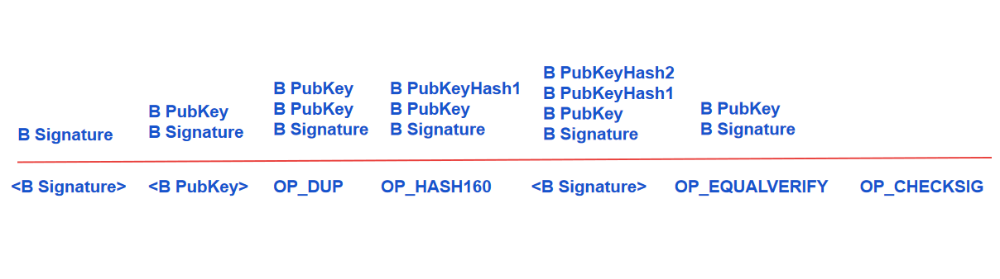

1. 比特币交易本质
- 交易实质是包含了一组输入列表和输出列表的数据结构，也就是转账记录
- inputs用了追溯上一笔交易，以便明确转出者是否有权动用这笔钱，Outputs用来进行一次新的加密，加密后只有收款者才能解密并动用这笔钱
- 输入中包含解锁脚本(unlocking script),输出中包含锁定脚本(locking script)
- 锁定脚本往往含有一个公钥或者比特币地址，常用scriptPubKey来表示
- 解锁脚本往往是支付方式用自己的私钥所做的签名，被称为签名脚本，用scriptSig表示
- 在一个交易中，锁定脚本相当于是加密难题，解锁脚本是解开锁定脚本的题解。但解锁脚本的解题是针对上一个交易输出产生的加密难题的题解。
2.比特币交易的生命周期
比特币交易的生命周期包括：创建交易，广播交易，打包交易，交易上链，交易回退
- 创建交易
- 支付A的客户端钱包先搜索A用户的UTXO列表信息，找寻A是否有足够的资金进行支付
- 如果足够，那么A需要用自己的私钥，对每一个UTXO做签名，同时附加每一个UTXO对应的公钥，以证明自己对该笔自己具有使用权，这些信息附加在A的支付方地址上，这就是解锁脚本。
- A在给收币方B转账过程中，会在转账金额末尾附加一个加密难题，从而将该笔转账资金进行锁定，只有满足条件的人才有权使用该笔资金，这就是锁定脚本。
- 每个输出可以设置多个加密难题，那么该输出下次被使用时就需要多个签名来解密
- 广播交易：略
- 打包交易：略
- 交易上链：
- 争夺记账权：工作量证明来争夺记账权，挖矿成功，该节点生成新区块。
- 全网记账：将新区块记录在自己的硬盘上，并同时将数据广播到全网。周边节点接受到后并传递给其他节点，直到全网都收到这个信息。接受到新区块的节点会对新区块进行核对，验证通过后，各个节点将该区块数据追加到比特币主链的最后端，其实就是记录到自己节点的硬盘中。
- 更新交易池：挖矿节点再接收并验证新区块数据后，会检查自己内存池中的全部交易，移除已经在新区块中出现过的交易记录
- 更新UTXO索引，每一个交易都代表着UTXO集合的变化。
- 交易经过6次“确认”，就认为交易是安全不可更改的。
- 交易回退
如果不巧出现临时分叉，则等到最长链诞生后，分叉区块会断链并将其中记录的交易回退到交易池中，等待重新被打包上链。
3.比特币交易规则
- 交易的输入和输出不能为空
- 交易中的每个输入，其对应的上一笔输出必须是UTXO
- 交易的每个输入，如果其对应的UTXO能在当前交易池中找到，则拒绝这笔交易。
- 交易中每个输入的解锁脚本必须和上一笔交易输出中的解锁脚本共同验证交易的合法性。
4.比特币交易的优先级
交易被打包的优先级取决于交易的输入对应的UTXO的“链龄”以及交易手续费
UTXO的“链龄”：由该交易所在区块的深度来计算，深度越大，“链龄”就越大
即便交易费为零的交易也可能被打包进块，因为最终为因为“链龄”增加而被打包进块。
5.比特币交易脚本
比特币脚本语言非常小，只有256个指令，每个指令一个字节长，这256个指令中75个是保留指令，15个已经废弃，可用的只有160多个
常用指令
OP_DUP (duplicate) 复制栈顶元素
OP_HASH160 (hash) 弹出栈顶元素，先进行SHA-256哈希，再进行Ripemd160哈希处理，将结果压入站
OP_EQUALVERIFY (equal verify) 弹出栈顶元素，如果两个内容一致，则返回1(true=1)，脚本继续执行
OP_CHECKSIG (check signature) 弹出栈顶两个元素，用公钥检查输入中的签名，验证该签名是否拥有该公钥的用户其私钥签署的。如果签名符合，则将true压入栈顶
OP_CHECKMULTSIG (check multiple signature) 用多个公钥检查多重签名的正确性
OP_RETURN (return) 标记交易无效
OP_PUSH 下面多少个字节要被压入堆栈
6.比特币交易的脚本执行过程（以P2PKH交易为例）
- A向B进行转账，该笔交易的输出中包含以下锁定脚本
OP_DUP OP_HASH160 < B Public Key Hash> OP_EQUALVERIFY OP_CHECKSIG
- B要使用这笔被A转账时锁定的资产，必须在交易中输入相应的解锁脚本
< B Signature> < B publick Key>
- 将两个脚本结合形成组合验证脚本
- 先执行输入脚本(解锁脚本)，再执行输出脚本(锁定脚本)，脚本从左至右执行
- < B Signature> < B publick Key> OP_DUP OP_HASH160 < B Public Key Hash> OP_EQUALVERIFY OP_CHECKSIG
- 组合脚本执行过程
- 将B的签名sig压入栈顶
- 将B的公钥压入栈顶
- 执行OP_DUP,即复制B的公钥，形成新的栈顶元素PubK
- 执行OP_HASH160。弹出PubK,先进行SHA-256哈希，再进行Ripemd160哈希，将结果PubKHash压入栈,形成新的栈顶元素PubKHash1
- 将B的公钥哈希压入栈，形成新的栈顶元素PubKHash2
- 执行OP_EQUALVERIFY，弹出栈顶元素，如果两个内容一致，则返回1，脚本继续执行
- OP_CHECKSIG 弹出栈顶两个元素，用公钥检查输入中的签名，验证该签名是否拥有该公钥的用户其私钥签署的。如果签名符合，则将true压入栈顶
